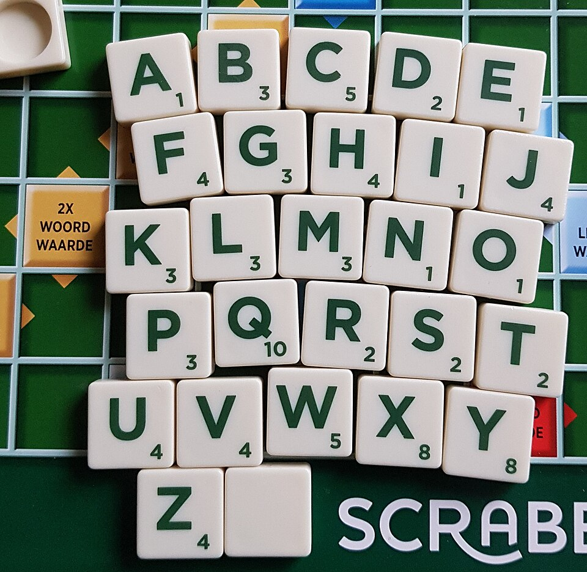
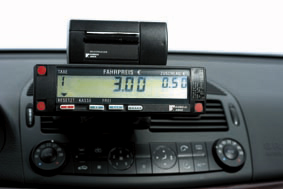
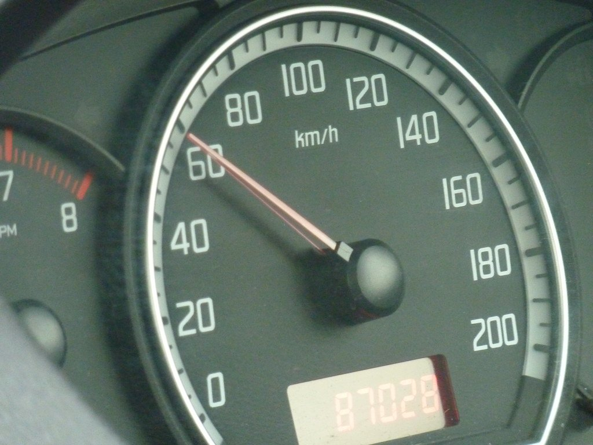
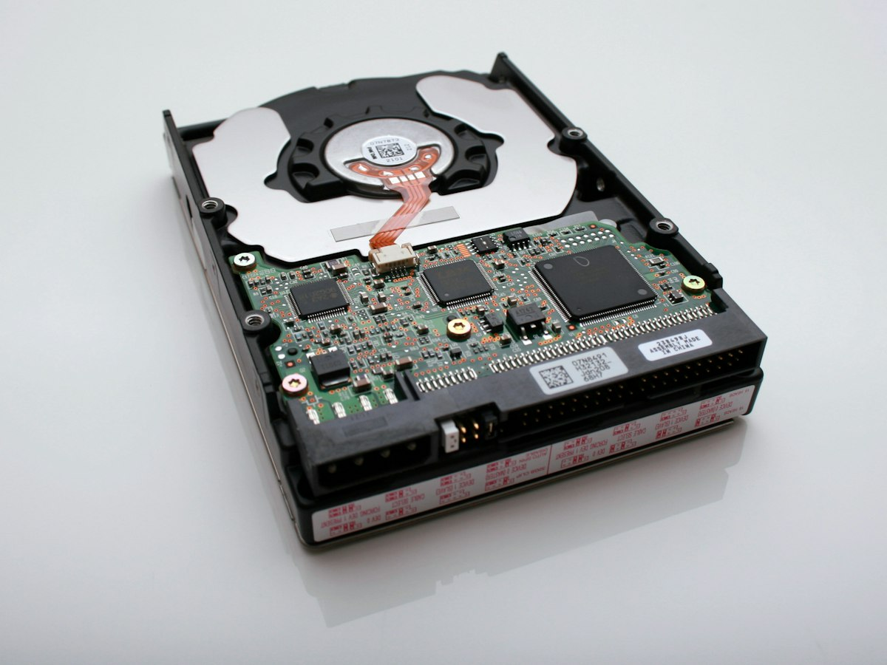
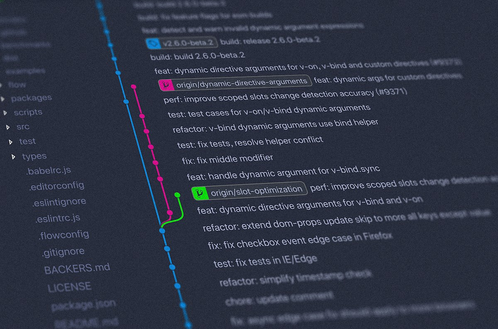
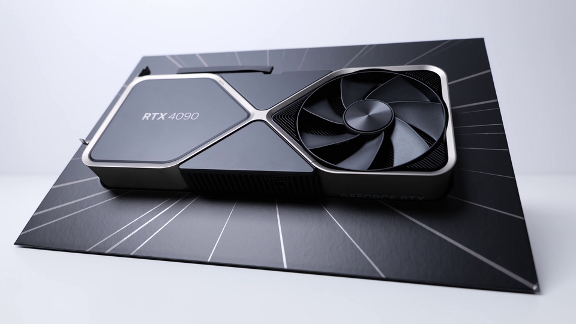
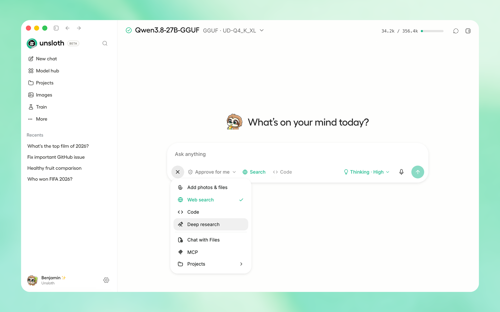
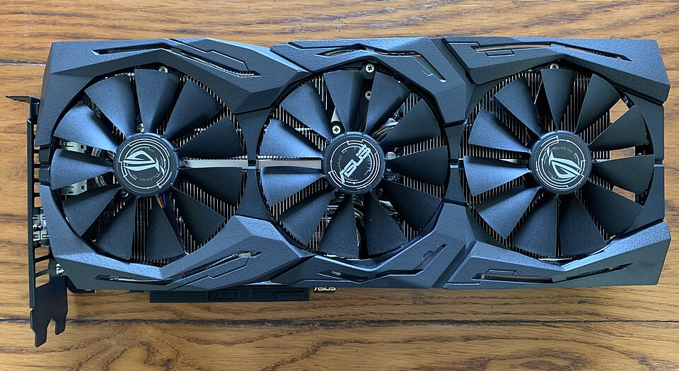

¿Qué es un token?
Un modelo no lee letras ni palabras: lee tokens, trozos de texto (a veces una palabra, a veces media, a veces un espacio y una coma). Cada token se convierte en un número, y ese número en un vector. Todo (el precio, la velocidad, la memoria) se mide en tokens.
Pruébalo: escribe algo y mira cómo se trocea
Simulación didáctica de un tokenizador BPE. Los reales (tiktoken, SentencePiece) dan resultados parecidos.
Del texto a la respuesta, en 5 pasos
Esto ocurre una vez por cada token que genera el modelo. Por eso la respuesta va apareciendo palabra a palabra.
[39577, 78211]cada token tiene un número
La temperatura controla esa elección: con temperatura baja, elige casi siempre el token más probable (más preciso); con temperatura alta, arriesga más (más creativo).

Cómo se calcula
Un algoritmo (BPE) aprende los fragmentos más frecuentes de millones de textos. Regla rápida: 1 token ≈ 4 caracteres en inglés ≈ 0,75 palabras. En español sale algo más caro: ~1,3 tokens por palabra. El código, los emojis y los idiomas con otros alfabetos gastan todavía más.

Cómo se cobra
Se paga por cada millón de tokens, con tres precios distintos: entrada (lo que envías), salida (lo que genera el modelo, entre 3 y 8 veces más cara) y caché (entrada repetida, hasta 90% más barata; cómo aprovecharla, en la sección 08).

Cómo se mide la velocidad
Tokens por segundo (tok/s). Para leer con comodidad bastan unos 10 tok/s; un agente que programa necesita 50–200 tok/s. También importa el TTFT: tiempo hasta el primer token.
¿Qué son los pesos?
Los pesos son los miles de millones de números que conectan las neuronas artificiales. Durante el entrenamiento se ajustan poco a poco hasta que el modelo predice bien el siguiente token. Un modelo "de 27B" tiene 27.000 millones de esos números. Descargar un modelo es, literalmente, descargar un archivo enorme con todos esos números.
Una red, explicada en 3 frases
Cada línea es un peso: cuánto influye una neurona en la siguiente. Cada círculo (una neurona) suma lo que le llega y aplica una función al resultado. Si apilas decenas de capas así y añades atención (el mecanismo que decide en qué tokens fijarse), tienes un Transformer.
= magnitud del peso
= positivo / negativo
Abierto vs cerrado: cuanto más abierto, mejor para ti
Closed source
Solo se pueden usar a través de su API o su app; los pesos no los ves ni los tocas. Suelen ser los más potentes, pero dependes de sus precios y términos, y vienen con muchas limitaciones de censura y medidas de seguridad: filtros que a veces les hacen negarse a tareas legítimas o a suavizar sus respuestas.

Open weights
Te dan los pesos para descargar y ejecutar, pero no los datos ni el código de entrenamiento. Hoy los modelos abiertos más potentes vienen sobre todo de laboratorios chinos.

Open source total
Pesos + datos + código + recetas. Reproducible y auditable. Son menos potentes, pero son la base de la ciencia abierta.
Un modelo es una función gigante
Recibe números (tokens, píxeles, audio) y devuelve números. Lo que cambia entre tipos es qué entra, qué sale y cómo está construido por dentro. Elige una familia:
Del reloj al centro de datos
El tamaño se mide en parámetros (B = miles de millones). Más parámetros suelen significar más conocimiento, pero también más memoria. La gráfica usa escala logarítmica:
Cuantización: menos bits, menos memoria
Cada peso se guarda con cierta precisión. Si bajas de 16 bits a 4, la memoria se reduce unas 4 veces a cambio de perder algo de calidad. Formatos modernos como NVFP4 (NVIDIA Blackwell) y MXFP4 aplican una escala distinta a cada bloque de pesos y apenas pierden calidad. Memoria para un modelo de 27B:
Dónde viven los pesos
Para generar cada token hay que leer los pesos. Cuanto más rápida es la memoria, más tok/s se generan. Por eso las GPUs son caras: su VRAM es rapidísima.
Offloading: lo que no cabe en la VRAM se pasa a la RAM o al disco. Funciona, pero va más lento. Herramientas como KTransformers o el --n-cpu-moe de llama.cpp colocan de forma inteligente las partes "calientes" en la GPU y los expertos MoE poco usados en RAM. Así puedes ejecutar a una velocidad decente modelos que, en teoría, no te caben.
La alternativa: alquilar la inferencia
OpenRouter te da una sola API y una sola factura para cientos de modelos de decenas de proveedores. También puedes ir directo a la API de cada empresa (DeepSeek, Moonshot, Anthropic, OpenAI, Google…) o a proveedores de open weights rápidos (Groq, Cerebras, Together, Fireworks). Es la opción ideal para modelos gigantes que nunca cabrían en tu ordenador.
¿Y con qué los ejecuto? Los engines
Un engine (motor de inferencia) carga los pesos y genera los tokens. Los recomendados, todos open source: llama.cpp (GGUF, CPU+GPU, todo terreno), vLLM y SGLang (servidores rápidos en GPU NVIDIA/AMD), MLX (Mac), ExLlamaV3 (GPU de consumo), ik_llama.cpp / KTransformers (MoE gigantes con offloading), ComfyUI (imagen/vídeo/audio) y Transformers de Hugging Face (todo, para aprender). Ollama y LM Studio también existen y son cómodos, pero no dejan de ser capas por encima de llama.cpp, cerradas o con muchas decisiones ya tomadas por ti: aquí preferimos ir directamente a la fuente.
¿Qué puedes hacer con unos pesos abiertos?

Ejecutarlo en local
Privacidad total, sin cuotas, sin internet.
Quitar restricciones
Con Heretic puedes quitarle al modelo sus mecanismos de seguridad para que deje de negarse a responder (abliteración automática), sin necesidad de reentrenarlo. Solo para uso personal y legítimo; no en equipos del centro.

Cambiar personalidad
Fine-tuning con LoRA (Unsloth, Axolotl): entrenas con tus propios ejemplos solo unas pequeñas capas añadidas, para darle tu tono o especializarlo en una tarea.

Cuantizarlo
Se reduce la precisión de sus números para que quepa en tu GPU (lo has visto arriba).
Quitarle los filtros no te exime de responsabilidad: tú respondes de lo que hagas con el modelo.
La ventana de contexto
Es todo lo que el modelo "ve" a la vez: instrucciones, conversación, archivos, resultados de herramientas. El modelo no recuerda nada entre mensajes: en cada turno se le reenvía la conversación entera.
Coste acumulado de una conversación
Como cada mensaje reenvía todo lo anterior, los tokens que pagas crecen de forma cuadrática. Compactar la conversación frena ese crecimiento.
Supuestos: cada mensaje añade 2.000 tokens y, al superar los 100K, la conversación se compacta en un resumen de 10K. Pasa el ratón por la gráfica para ver cada mensaje.
¿Qué ocupa tu ventana antes de que escribas nada?
Antes de que escribas nada, el harness ya ocupa parte de la ventana con sus instrucciones y herramientas (lo vemos con cifras en la sección 08).
Después, lo que más llena el contexto son las salidas de herramientas (logs, archivos leídos); por eso los buenos harnesses las recortan.
Autocompactación
Cuando la ventana se llena, el harness resume la conversación y empieza de nuevo con ese resumen. Ahorra muchísimo, pero cada resumen pierde matices: tras varias compactaciones el agente "descarrila", olvida decisiones o repite errores.
Cómo sobrellevarla
Sesiones cortas con un objetivo y las decisiones guardadas en archivos. Lo tienes paso a paso en la sección 10 · Higiene de sesiones.
De RoPE a hoy
RoPE codificaba la posición rotando vectores; la ventana se ampliaba con trucos (NTK, YaRN). Hoy dominan la atención híbrida (capas locales + globales), atención dispersa (DeepSeek Sparse Attention), capas lineales tipo Mamba/Gated DeltaNet y cachés KV comprimidas (MLA).
Cómo comparar modelos
No te fíes de la nota que publica la propia empresa. Usa evaluadores independientes, y el adecuado para cada tipo de modelo.
¿Dónde miro cada cosa?
| Tipo | Referencia |
|---|---|
| LLMs (calidad, precio, velocidad) | Artificial Analysis |
| Preferencia humana | LMArena |
| Agentes de código | SWE-bench, Terminal-Bench |
| Imagen / vídeo / voz | Arenas de Artificial Analysis |
| Transcripción | Open ASR Leaderboard (HF) |
| Embeddings | MTEB |
| Contexto largo | Fiction.LiveBench, MRCR |
Inteligencia frente a coste por tarea
Lo que buscas está arriba a la izquierda: modelos listos y baratos. El eje horizontal es lo que cuesta resolver cada tarea del índice (escala logarítmica), no el precio por token: un modelo que piensa mucho sale más caro aunque cada token cueste poco.
Datos: Artificial Analysis, Intelligence Index v5 y coste por tarea, consultado el 3 de noviembre de 2026. Verde = open weights.
Tres factores
Para elegir modelo, fíjate en tres cosas: inteligencia, coste por tarea y velocidad.
Bajo el capó
Para quien quiera saber qué pasa de verdad cuando el modelo "piensa": cómo se sirve cada respuesta, cómo decide en qué fijarse y cómo se fabrica un LLM desde cero. No hace falta para usar la IA, pero ayuda a entender por qué cuesta lo que cuesta y por qué va como va.
Extra avanzado: ábrelo si quieres saber cómo funciona por dentro (no hace falta para seguir)
Aviso honesto
Esto es de lo más complejo del campo: detrás de cada párrafo hay papers de 50 páginas llenos de matemáticas. Aquí solo va la intuición. Si algo te pica la curiosidad, pásale el paper a tu IA y pídele que te lo explique paso a paso.
Prefill y decode: las dos fases de cada respuesta
Cuando pulsas Enter, el modelo primero lee tu prompt entero de golpe (prefill) y después escribe la respuesta token a token (decode). Son dos trabajos muy distintos para el hardware.
TTFT (tiempo hasta el primer token)
Cola + prefill. Crece con la longitud del prompt: un agente que envía 100.000 tokens de contexto puede tardar varios segundos en "arrancar". Si esa entrada ya está en la caché de prompt, el prefill casi desaparece (y es hasta un 90% más barato).
Prefill: limitado por el cálculo
Todos los tokens del prompt se procesan a la vez, como una gran multiplicación de matrices. Aquí manda la potencia bruta de la GPU. Por eso la entrada es más barata que la salida.
Decode: limitado por la memoria
Para cada token nuevo hay que leer otra vez los pesos activos y toda la caché KV. Manda la velocidad de la memoria, no el cálculo. Por eso importa tanto la VRAM rápida, y por eso los MoE (pocos pesos activos) generan más rápido.
Caché KV: la memoria que crece con cada token
Para no recalcular el pasado, cada capa guarda una clave (K) y un valor (V) por cada token ya leído. Cuanto más largo es el contexto, más ocupa. Arrastra el control:
La barra llena son 24 GB, toda la VRAM de una RTX 4090. En rojo: la caché no cabe ni sin contar los pesos. Modelo ilustrativo de 61 capas: atención clásica con 8 cabezas KV de 128 dimensiones en BF16 (~250 KB por token), MLA de DeepSeek V3 (~70 KB) y DeepSeek V4, que usa ~2% de la clásica según su informe técnico. Son órdenes de magnitud, no las cifras exactas de un modelo concreto.
Por qué todo el mundo quiere encogerla
Cada factor es un sitio por donde recortar, y casi toda la investigación en atención de 2024–2026 ataca alguno:
- Menos cabezas KV: GQA y MQA hacen que varias cabezas compartan la misma K y V.
- Menos dimensiones: MLA comprime K y V en un vector latente pequeño.
- Menos bytes: guardar la caché en FP8 en lugar de BF16 la reduce a la mitad.
- Menos tokens: resumir los tokens antiguos o mirar solo los relevantes (atención dispersa y comprimida).
Importa por tres motivos: decide cuánto contexto te cabe en tu GPU, a cuántos usuarios a la vez puede atender un servidor (y por tanto el precio), y lo lento que va el decode cuando la conversación es larga.
En qué se fija el modelo, y cuánto le cuesta
La atención decide, para cada token nuevo, qué tokens anteriores son relevantes. En su versión original cada token mira a todos los anteriores: el coste crece con el cuadrado del contexto. DeepSeek es quien más ha publicado sobre cómo evitarlo. Cada cuadrícula es una matriz de atención: filas = tokens que se generan, columnas = tokens anteriores, color = "se mira".
Atención completa
Cada token mira a todos los anteriores. Máxima calidad, pero a 1M tokens la matriz tiene un billón de celdas y la caché KV es enorme.
MLA: comprimir la caché
Multi-head Latent Attention: sigue mirándolo todo, pero guarda K y V comprimidos en un vector latente pequeño. La caché se reduce varias veces sin perder calidad apreciable.
Atención dispersa (DSA)
Un lightning indexer muy barato puntúa todos los tokens anteriores y cada consulta solo atiende a los más relevantes (2.048 en V3.2) más los más recientes. El coste deja de ser cuadrático.
Híbrida comprimida
CSA resume cada pocos tokens en uno y elige los mejores bloques; HCA resume muchísimo más y los mira todos; una ventana deslizante conserva intactos los últimos tokens. A 1M tokens, V4-Pro usa ~27% del cálculo y ~10% de la caché de V3.2.
Otros laboratorios van por caminos parecidos: Qwen y Kimi intercalan capas de atención lineal (Gated DeltaNet, Kimi Delta Attention) con capas de atención completa, y Gemma o gpt-oss alternan capas de ventana deslizante y capas globales. Fuentes: informes técnicos de DeepSeek-V2, NSA, DeepSeek-V3.2 y DeepSeek-V4.
DeepSeek V4, en cinco piezas
Sigue siendo un Transformer: tokens que entran, decenas de bloques apilados y una predicción que sale. Lo nuevo está en los detalles, publicados en su informe técnico:
- MoE gigante: V4-Pro tiene 1,6 billones de parámetros, pero solo usa 49.000 millones por token; V4-Flash, 284.000 millones con 13.000 millones activos.
- Atención híbrida: la de la cuadrícula de arriba, para llegar a 1M de tokens de contexto.
- mHC (Manifold-Constrained Hyper-Connections): ensancha la "autopista" por la que viaja la información entre capas a varios carriles, con mezclas restringidas para que el entrenamiento no se desestabilice.
- Muon: un optimizador más eficiente que el clásico AdamW para casi todos los pesos.
- MTP y FP4: predice más de un token a la vez (sirve para entrenar mejor y para acelerar la inferencia) y guarda los expertos en 4 bits.
Cómo se fabrica un LLM
Cada laboratorio tiene su receta secreta, pero los pasos son casi siempre estos. Los cuatro primeros dan un modelo que "sabe" cosas; los demás lo convierten en un asistente útil.
Conseguir texto a lo bestia
Decenas de billones de tokens: la web entera (Common Crawl), libros, artículos científicos, Wikipedia, código de GitHub, foros. Buena parte se tomó sin pedir permiso ni pagar a sus autores: OpenAI, Anthropic, Meta y compañía entrenaron con casi todo lo que la humanidad ha publicado, incluidos libros pirateados. Anthropic pagó 1.500 millones de dólares en 2025 para cerrar la demanda colectiva de los autores por esas descargas, y siguen abiertas decenas de demandas contra otras empresas.
Tirar casi todo
Quitar duplicados, spam, texto basura y datos personales; filtrar por calidad con clasificadores (otro modelo puntúa si una página "es educativa"); equilibrar idiomas y temas. La mayor parte de la web cruda acaba en la papelera.
Que los modelos escriban para los modelos
Modelos anteriores reescriben textos, inventan problemas de matemáticas y código con solución comprobable y generan trazas de razonamiento y de agentes. Se filtran con verificadores (¿pasa los tests?, ¿el resultado es correcto?). A veces se "destila" de modelos de la competencia, algo que sus términos de uso prohíben.
Predecir el siguiente token, billones de veces
Semanas o meses en miles de GPUs. Se ajustan los pesos de todas las capas (embeddings, decenas de bloques de atención + MoE y la cabeza de salida) para predecir mejor cada siguiente token. DeepSeek V4 se preentrenó con 32–33 billones de tokens. Al final se alarga el contexto y se añaden los datos de más calidad (mid-training).
Aprender a ser un asistente
Supervised fine-tuning: cientos de miles de ejemplos de instrucción → respuesta ideal. Aquí aprende el formato de chat, a usar herramientas y a seguir instrucciones.
Premiar lo que sale bien
El modelo genera muchas respuestas y se refuerzan las mejores. La nota la pone un modelo de recompensa entrenado con preferencias humanas (RLHF), una regla verificable (¿pasan los tests?, ¿es correcta la cuenta?: RLVR), una rúbrica o un juez que es otro LLM. GRPO, de DeepSeek, compara un grupo de respuestas al mismo problema entre sí y se ahorra un segundo modelo crítico. Los agentes se entrenan así en entornos reales: terminales, navegadores, repositorios.
Juntar a los expertos
DeepSeek V4 entrena primero un especialista por área (matemáticas, código, agentes, seguir instrucciones), cada uno con su SFT y su RL, y después los funde en un único modelo que aprende de todos ellos (destilación on-policy).
Benchmarks, seguridad y cuantización
Baterías de evaluaciones, red teaming (intentar romperlo a propósito), filtros de seguridad, versiones cuantizadas y, por fin, la API y los pesos.
Las métricas que vigilan
Durante el preentrenamiento, la curva estrella es la pérdida (loss): cuánto se equivoca prediciendo el siguiente token. Baja rápido al principio y luego muy despacio. Los picos son sustos que pueden echar a perder semanas de cálculo.
Y en el RL: recompensa media (¿mejora?), longitud de las respuestas (¿piensa más?), entropía (¿sigue explorando?) y la distancia al modelo de partida. Si la recompensa sube demasiado deprisa, suele ser reward hacking: el modelo ha encontrado una trampa para sacar buena nota sin hacer bien la tarea.
De aquí viene la "pelotería"
A los humanos que puntúan respuestas les gusta que les den la razón, y el RLHF lo premia. Por eso todos los modelos tienden a decirte lo que quieres oír. En "Cómo trabajar" vemos cómo defenderte.
Entrenar a la vista de todos: Xiaomi MiMo-V2.6
El 15 de septiembre de 2026, Xiaomi arrancó el post-entrenamiento por RL de MiMo-V2.6-Pro y Flash y lo emitió en un panel público (mimo.xiaomi.com/rl): coste en tiempo real, tokens procesados, tiempo por paso, composición de los datos en 23 categorías y la nota en benchmarks a medida que el modelo mejoraba. Por primera vez se veía desde fuera, paso a paso, cómo el RL convierte un modelo en un agente mucho mejor.
Cifras recogidas por Forkast. Con matices: en Hacker News señalaron que los datos podrían repetirse al recargar la página, y una línea del panel ("Claude Distill Requests: hidden") hizo sospechar de destilación de modelos cerrados. Xiaomi ha prometido publicar los detalles técnicos poco a poco.
✅ Comprueba que lo has entendido
- ¿Por qué la salida cuesta más que la entrada?
- ¿Cuánta VRAM necesita un 27B en 4 bits?
- ¿Por qué una conversación larga sale cara?
 Cursor
Cursor Kiro (AWS)
Kiro (AWS) VS Code + Copilot
VS Code + Copilot
 n8n, la fábrica de automatizaciones
n8n, la fábrica de automatizaciones